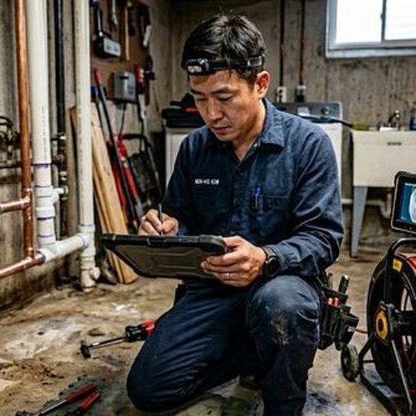
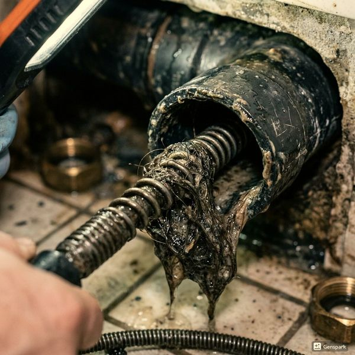
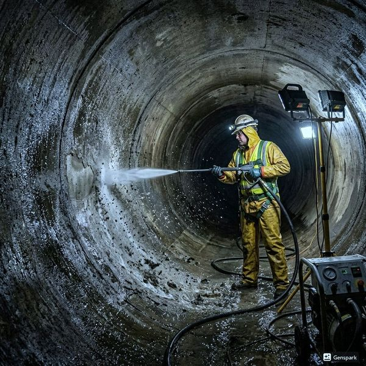

녹물과 탁한 물이 나오는 원인
수도에서 녹물이나 탁한 물이 나오는 원인은 크게 세 가지입니다. 첫째, 건물 내 급수 배관(아연도금강관)의 내부 부식입니다. 15년 이상 된 아연도금강관은 내부 도금이 벗겨지며 철 녹이 발생하여 붉은색 녹물이 나옵니다. 둘째, 상수도 본관 공사나 단수 후 복구 과정에서 배관 내 침전물이 섞여 나오는 일시적 탁수입니다. 셋째, 옥상 물탱크(저수조)의 관리 부실로 내부에 이물질이 축적된 경우입니다. 녹물에는 철, 망간 등의 중금속이 포함되어 있어 장기간 음용 시 건강에 해로울 수 있으므로 원인 해결이 필수입니다.

녹물 대처법과 근본 해결
일시적 탁수라면 냉수 수전을 5~10분간 열어두어 탁한 물을 빼내면 됩니다. 그러나 지속적으로 녹물이 나온다면 배관 교체가 필요합니다. 아연도금강관을 스테인리스 배관이나 PE관으로 교체하면 근본적으로 해결됩니다. 부분 교체도 가능하지만, 오래된 건물이라면 전체 교체가 장기적으로 경제적입니다. 옥상 물탱크가 원인이라면 전문 청소와 내부 코팅이 필요합니다. 제우스시설관리는 내시경 카메라로 배관 내부 상태를 정확히 확인하고, 최적의 교체 방안을 제안합니다. 수질 걱정 없는 깨끗한 물, 28분 내 출동으로 빠르게 해결해 드립니다.

자주 묻는 질문
Q. 녹물이 나오면 정수기를 쓰면 되지 않나요?
A. 정수기는 일시적 대응은 가능하지만, 필터 수명이 크게 단축되고 근본적 해결이 아닙니다. 배관 교체가 가장 확실한 해결책입니다.
Q. 녹물 때문에 세탁물이 변색되면 보상받을 수 있나요?
A. 건물 배관 문제가 원인이면 건물주(관리자)에게, 상수도 공사가 원인이면 수도사업소에 피해 보상을 청구할 수 있습니다.